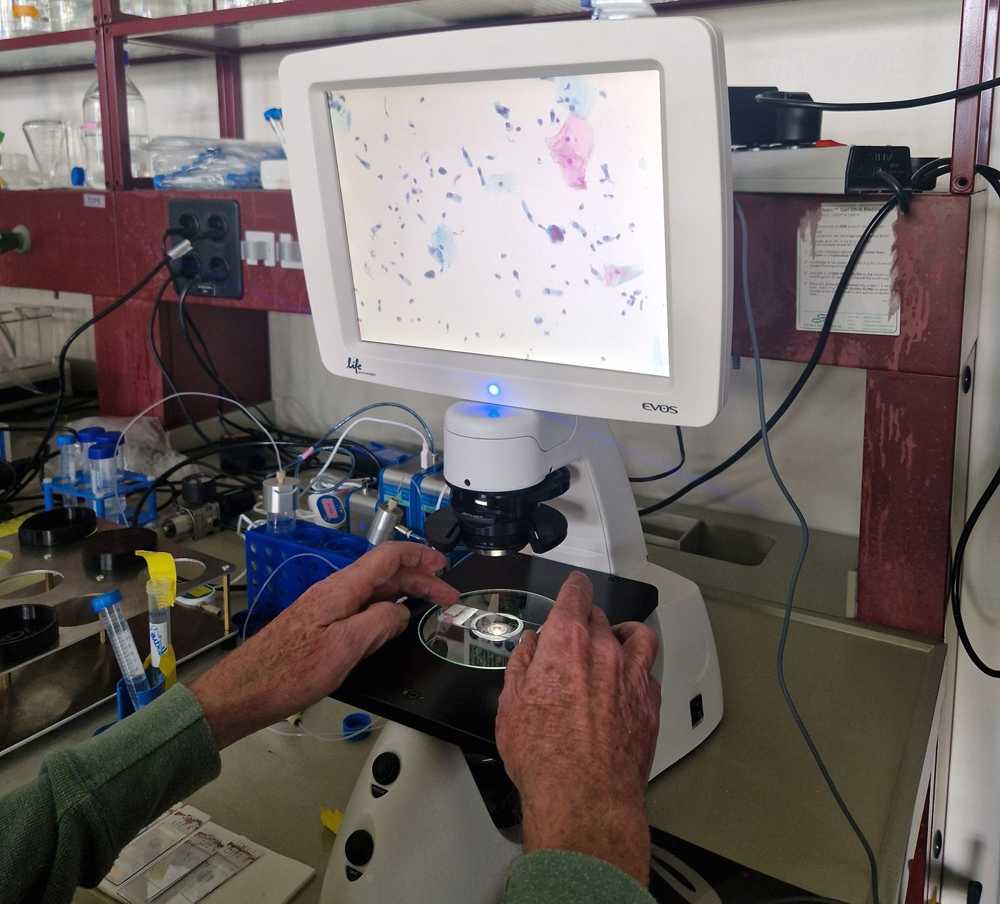

Telecytology platform
Our platform connects every screening site to a network of pathologists. Slides are digitised where the sample was taken and read remotely, so a woman gets her triage result without travelling to a city laboratory.

From slide to result
Six steps take a stained slide from the screening site to a pathologist and bring the result back.
- RegisterThe nurse records the woman's details on the on-site computer, which gives her sample a unique code.
- LabelThe code is printed as a QR label and attached to her slide. The slide carries no name.
- Stain and scanAfter staining with GyroStainer, a digital microscope scans the slide into a high-resolution image.
- UploadThe image goes to the platform over Starlink or Wi-Fi. The platform reads the code and matches the image with the clinical information sent for it.
- ReviewA pathologist from our network reads the slide on screen and enters the result.
- ReturnThe result comes back to the site tagged only with the code. The on-site computer matches it to the woman, and the nurse tells her the result.
Try the platform
A simplified version of what a pathologist sees. Pick a case, look closer at the slide, and send a result.
Cases to review

Move over the slide to magnify it.
Case
- Code
- Age
- HPV test
- Site
What the platform sends
: . No name, only the code.
What happens on site
The on-site computer matches the code to the woman's record.
Patient data, handled with care
Remote review means health data travels. The pathologist sees everything needed for a diagnosis, and nobody outside the site can link a slide to a woman's name.
The on-site record
On the site's computer, in software separate from the platform
- What it holds
- The woman's name and details, linked to her sample code.
- How it is protected
- Full disk encryption and a password, on a computer kept locked in the van or clinic. A stolen hard drive can't be read.
- Backup
- An encrypted copy is kept in a separate secure cloud, which the platform's managers cannot access.
- Slide images
- Deleted from the computer automatically 60 days after the image has reached the platform and been diagnosed.
The platform record
On the telecytology platform
- What it holds
- The slide image and the clinical information needed for a diagnosis, under a new code the platform assigns. No name or identity.
- How it is protected
- Every connection between the site and the platform is encrypted with TLS 1.3.
- Slide images
- The QR label is cropped out of the image, and its original pixels are permanently deleted from the platform.
Only what is needed
Slides are shared for review with the information required for a diagnosis and nothing more.
Limited access
Only the clinicians involved in a woman's care can see her results.
Local rules first
Data handling follows the regulations of the country where we work, agreed with each partner before deployment.
Consent first
Every woman signs a consent and data-sharing agreement.
Anonymous on both sides
Nurses and pathologists can message each other on the platform without knowing who the other is. If an issue is reported, the platform can identify the pathologist.
Nothing kept longer than needed
Images on the site's computer are deleted automatically once they have been diagnosed.
AI in the loop
With EPFL's LTS5 lab, we are researching an algorithm that highlights suspicious cells on a digitised slide, so pathologists know where to look first.
It is part of the platform as a research tool. Once validated, it will help reviewers work faster, at no extra cost to our partners.
Are you a pathologist?
Reviews are done by a network of pathologists, paid per slide. If you read cervical cytology and would like to help women in low-resource settings, we'd like to hear from you.
Join the review network